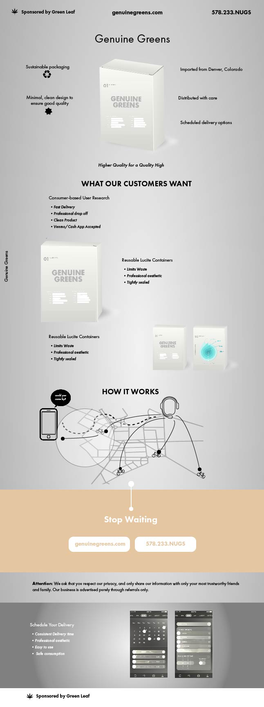

Throughout my research on the marijuana delivery service in New York City, I came across a common problem that both the delivery service companies and the customers face. Many customers are very unfamilar with who is running the services, who is deliverying to them and coming inside their home? More importantly, how clean is the product?
During my research presentation, it became clear that many people were unfamilar with how the marijuana service works. One of the slides contained a "how it works" image which ended up misleading and made the delivery look for like an uber-like operated app. I thought well, there should be one! Which ulitmately led me to decide on my Genuine Greens what if concept.
My poster shows a delivery service made to please both the consumer and the driver based on information found during my research. The most common misconception of a marijuana delivery service is the older view that a sketchy dealer comes by your house with a baggie of marijuana. My project aims to represents a professional, idealistic way of respresenting research in the form of a business advertisment. In short, Genuine Greens is an informational graphic disguised as a "what if" business based on the findings from my research.